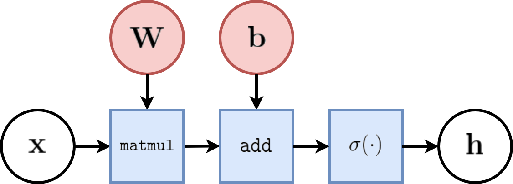
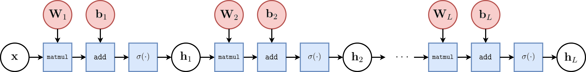
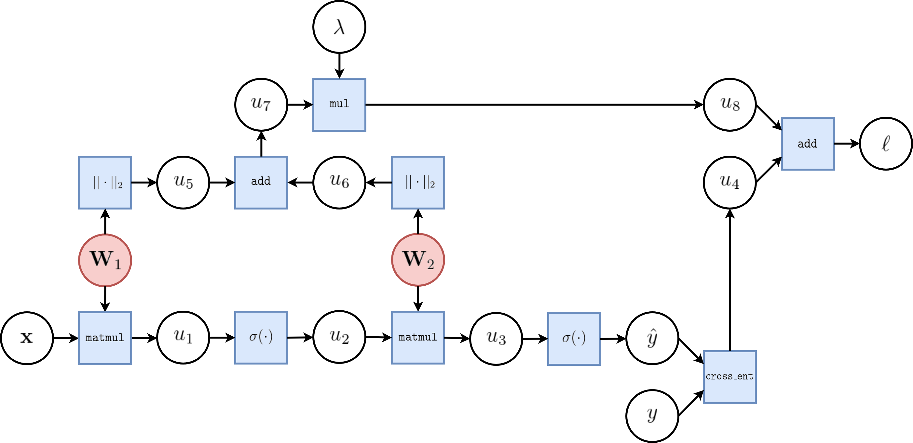
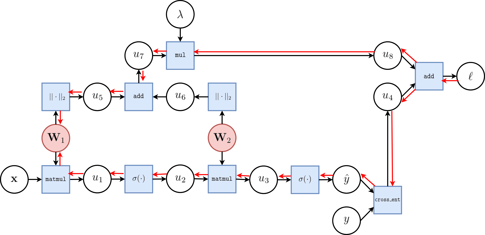
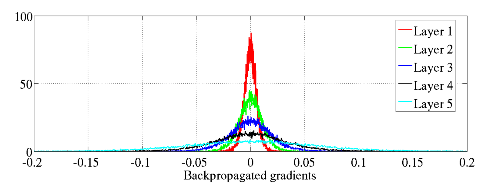
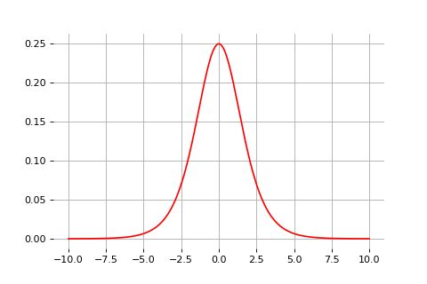
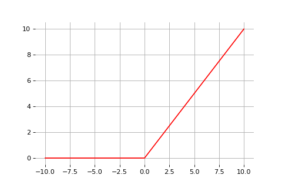
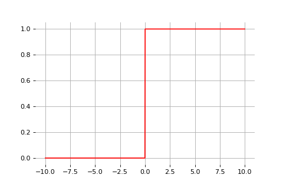

class: center, middle # Neural networks and Backpropagation Tom Dupré la Tour .center[ ] (Adapted from Gilles Louppe, University of Liège) --- # Layers Let's consider the logistic unit $h=\sigma\left(\mathbf{w}^T \mathbf{x} + b\right)$, where $h \in \mathbb{R}$, $\mathbf{x} \in \mathbb{R}^p$, $\mathbf{w} \in \mathbb{R}^p$ and $b \in \mathbb{R}$. These units can be composed *in parallel* to form a **layer** with $q$ outputs: $$\mathbf{h} = \sigma(\mathbf{W}^T \mathbf{x} + \mathbf{b})$$ where $\mathbf{h} \in \mathbb{R}^q$, $\mathbf{x} \in \mathbb{R}^p$, $\mathbf{W} \in \mathbb{R}^{p\times q}$, $b \in \mathbb{R}^q$ and where $\sigma(\cdot)$ is upgraded to the element-wise sigmoid function. .center[  ] --- # Multi-layer perceptron Similarly, layers can be composed *in series*, such that: $$\begin{aligned} \mathbf{h}\_0 &= \mathbf{x} \\\\ \mathbf{h}\_1 &= \sigma(\mathbf{W}\_1^T \mathbf{h}\_0 + \mathbf{b}\_1) \\\\ ... \\\\ \mathbf{h}\_L &= \sigma(\mathbf{W}\_L^T \mathbf{h}\_{L-1} + \mathbf{b}\_L) \\\\ f(\mathbf{x}; \theta) &= \mathbf{h}\_L \end{aligned}$$ where $\theta$ denotes the model parameters $\\{ \mathbf{W}\_k, \mathbf{b}\_k, ... | k=1, ..., L\\}$. - This model is the **multi-layer perceptron**, also known as the fully connected feedforward network. - Optionally, the last activation $\sigma$ can be skipped to produce unbounded output values $\hat{y} \in \mathbb{R}$. --- class: middle, center .center[  ] --- class: middle To minimize $\mathcal{L}(\theta)$ with stochastic gradient descent, we need the gradient $\nabla_\theta \mathcal{\ell}(\theta_t)$ Therefore, we require the evaluation of the (total) derivatives $$\frac{\text{d} \ell}{\text{d} \mathbf{W}\_k}, \frac{\text{d} \mathcal{\ell}}{\text{d} \mathbf{b}\_k}$$ of the loss $\ell$ with respect to all model parameters $\mathbf{W}\_k$, $\mathbf{b}\_k$, for $k=1, ..., L$. These derivatives can be evaluated automatically from the *computational graph* of $\ell$ using **automatic differentiation**. --- # Automatic differentiation Consider a 1-dimensional output composition $f \circ g$, such that $$\begin{aligned} y &= f(\mathbf{u}) \\\\ \mathbf{u} &= g(x) = (g\_1(x), ..., g\_m(x)). \end{aligned}$$ The **chain rule** of total derivatives states that $$\frac{\text{d} y}{\text{d} x} = \sum\_{k=1}^m \frac{\partial y}{\partial u\_k} \underbrace{\frac{\text{d} u\_k}{\text{d} x}}\_{\text{recursive case}}$$ - Since a neural network is a composition of differentiable functions, the total derivatives of the loss can be evaluated by applying the chain rule recursively over its computational graph. - The implementation of this procedure is called (reverse) **automatic differentiation** (AD). --- As a guiding example, let us consider a simplified 2-layer MLP and the following loss function: $$\begin{aligned} f(\mathbf{x}; \mathbf{W}\_1, \mathbf{W}\_2) &= \sigma\left( \mathbf{W}\_2^T \sigma\left( \mathbf{W}\_1^T \mathbf{x} \right)\right) \\\\ \mathcal{\ell}(y, \hat{y}; \mathbf{W}\_1, \mathbf{W}\_2) &= \text{cross_entropy}(y, \hat{y}) + \lambda \left( ||\mathbf{W}_1||\_2 + ||\mathbf{W}\_2||\_2 \right) \end{aligned}$$ for $\mathbf{x} \in \mathbb{R^p}$, $y \in \mathbb{R}$, $\mathbf{W}\_1 \in \mathbb{R}^{p \times q}$ and $\mathbf{W}\_2 \in \mathbb{R}^q$. -- .center[  ] --- The total derivative $\frac{\text{d} \ell}{\text{d} \mathbf{W}\_1}$ can be computed **backward**, by walking through all paths from $\ell$ to $\mathbf{W}\_1$ in the computational graph and accumulating the terms: $$\begin{aligned} \frac{\text{d} \ell}{\text{d} \mathbf{W}\_1} &= \frac{\partial \ell}{\partial u\_8}\frac{\text{d} u\_8}{\text{d} \mathbf{W}\_1} + \frac{\partial \ell}{\partial u\_4}\frac{\text{d} u\_4}{\text{d} \mathbf{W}\_1} \\\\ \frac{\text{d} u\_8}{\text{d} \mathbf{W}\_1} &= ... \end{aligned}$$ .center[  ] --- class: middle - This algorithm is known as **reverse-mode automatic differentiation**, also called **backpropagation**. - An equivalent procedure can be defined to evaluate the derivatives in *forward mode*, from inputs to outputs. - Automatic differentiation generalizes to $N$ inputs and $M$ outputs. - if $N \gg M$, reverse-mode automatic differentiation is computationally more efficient. - otherwise, if $M \gg N$, forward automatic differentiation is better. - Since differentiation is a linear operator, AD can be implemented efficiently in terms of matrix operations. --- # Vanishing gradients Training deep MLPs with many layers has for long (pre-2011) been very difficult due to the **vanishing gradient** problem. - Small gradients slow down, and eventually block, stochastic gradient descent. - This results in a limited capacity of learning. .center[  ] .center[Backpropagated gradients normalized histograms (Glorot and Bengio, 2010).<br> Gradients for layers far from the output vanish to zero. ] --- class: middle Consider a simplified 3-layer MLP, with $x, w\_1, w\_2, w\_3 \in\mathbb{R}$, such that $$f(x; w\_1, w\_2, w\_3) = \sigma\left(w\_3\sigma\left( w\_2 \sigma\left( w\_1 x \right)\right)\right). $$ Under the hood, this would be evaluated as $$\begin{aligned} u\_1 &= w\_1 x \\\\ u\_2 &= \sigma(u\_1) \\\\ u\_3 &= w\_2 u\_2 \\\\ u\_4 &= \sigma(u\_3) \\\\ u\_5 &= w\_3 u\_4 \\\\ \hat{y} &= \sigma(u\_5) \end{aligned}$$ and its derivative $\frac{\text{d}\hat{y}}{\text{d}w\_1}$ as $$\begin{aligned}\frac{\text{d}\hat{y}}{\text{d}w\_1} &= \frac{\partial \hat{y}}{\partial u\_5} \frac{\partial u\_5}{\partial u\_4} \frac{\partial u\_4}{\partial u\_3} \frac{\partial u\_3}{\partial u\_2}\frac{\partial u\_2}{\partial u\_1}\frac{\partial u\_1}{\partial w\_1}\\\\ &= \frac{\partial \sigma(u\_5)}{\partial u\_5} w\_3 \frac{\partial \sigma(u\_3)}{\partial u\_3} w\_2 \frac{\partial \sigma(u\_1)}{\partial u\_1} x \end{aligned}$$ --- class: middle The derivative of the sigmoid activation function $\sigma$ is: .center[  ] $$\frac{\text{d} \sigma}{\text{d} x}(x) = \sigma(x)(1-\sigma(x))$$ Notice that $0 \leq \frac{\text{d} \sigma}{\text{d} x}(x) \leq \frac{1}{4}$ for all $x$. --- class: middle Assume that weights $w\_1, w\_2, w\_3$ are initialized randomly from a Gaussian with zero-mean and small variance, such that with high probability $-1 \leq w\_i \leq 1$. Then, $$\frac{\text{d}\hat{y}}{\text{d}w\_1} = \underbrace{\frac{\partial \sigma(u\_5)}{\partial u\_5}}\_{\leq \frac{1}{4}} \underbrace{w\_3}\_{\leq 1} \underbrace{\frac{\partial \sigma(u\_3)}{\partial u\_3}}\_{\leq \frac{1}{4}} \underbrace{w\_2}\_{\leq 1} \underbrace{\frac{\sigma(u\_1)}{\partial u\_1}}\_{\leq \frac{1}{4}} x$$ This implies that the gradient $\frac{\text{d}\hat{y}}{\text{d}w\_1}$ **exponentially** shrinks to zero as the number of layers in the network increases. Hence the vanishing gradient problem. - In general, bounded activation functions (sigmoid, tanh, etc) are prone to the vanishing gradient problem. - Note the importance of a proper initialization scheme. --- # Rectified linear units Instead of the sigmoid activation function, modern neural networks are for most based on **rectified linear units** (ReLU) (Glorot et al, 2011): $$\text{ReLU}(x) = \max(0, x)$$ .center[  ] --- class: middle Note that the derivative of the ReLU function is $$\frac{\text{d}}{\text{d}x} \text{ReLU}(x) = \begin{cases} 0 &\text{if } x \leq 0 \\\\ 1 &\text{otherwise} \end{cases}$$ .center[  ] For $x=0$, the derivative is undefined. In practice, it is set to zero. --- class: middle Therefore, $$\frac{\text{d}\hat{y}}{\text{d}w\_1} = \underbrace{\frac{\partial \sigma(u\_5)}{\partial u\_5}}\_{= 1} w\_3 \underbrace{\frac{\partial \sigma(u\_3)}{\partial u\_3}}\_{= 1} w\_2 \underbrace{\frac{\partial \sigma(u\_1)}{\partial u\_1}}\_{= 1} x$$ This **solves** the vanishing gradient problem, even for deep networks! (provided proper initialization) Note that: - The ReLU unit dies when its input is negative, which might block gradient descent. - This is actually a useful property to induce *sparsity*. - This issue can also be solved using **leaky** ReLUs, defined as $$\text{LeakyReLU}(x) = \max(\alpha x, x)$$ for a small $\alpha \in \mathbb{R}^+$ (e.g., $\alpha=0.1$). --- class: middle # Summary: - A neural network is a *computational graph* composed of a series **layers**. - Its parametric function is tuned to fit the output of a training set. - We tune the parameters through stochastic gradient descent. - To compute the gradient in a computational graph, we use the chain rule in **automatic differentiation**. - "Reverse-mode automatic differentiation" is classed **backpropagation**. - Backpropagation on the sigmoid activation function leads to *vanishing moments*, which is solved with Rectified linear units (ReLu).